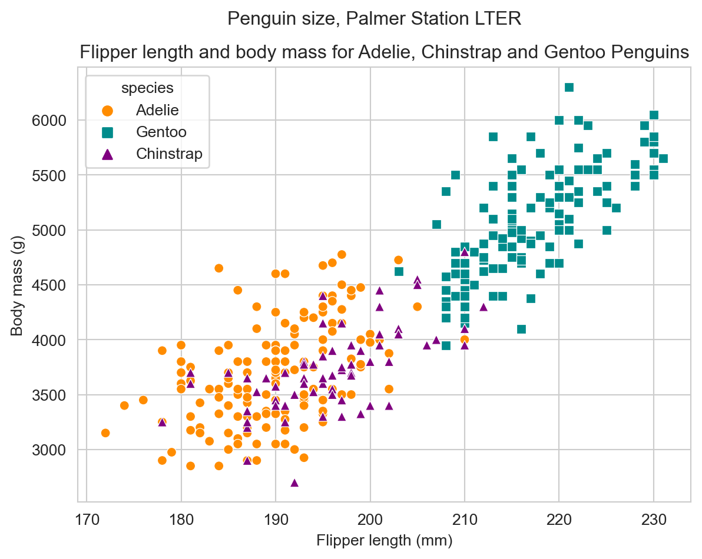
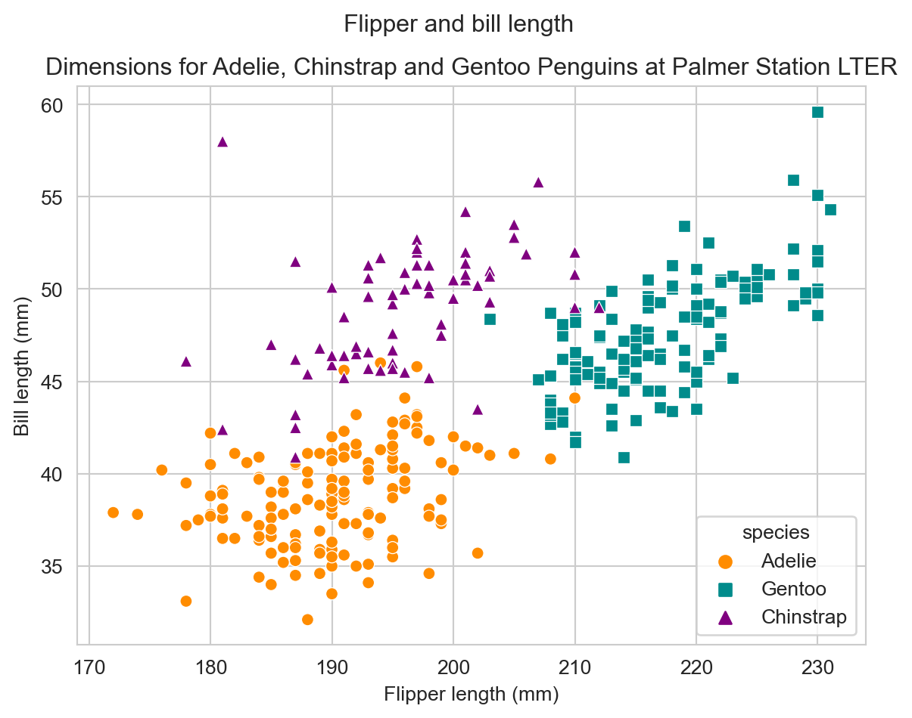
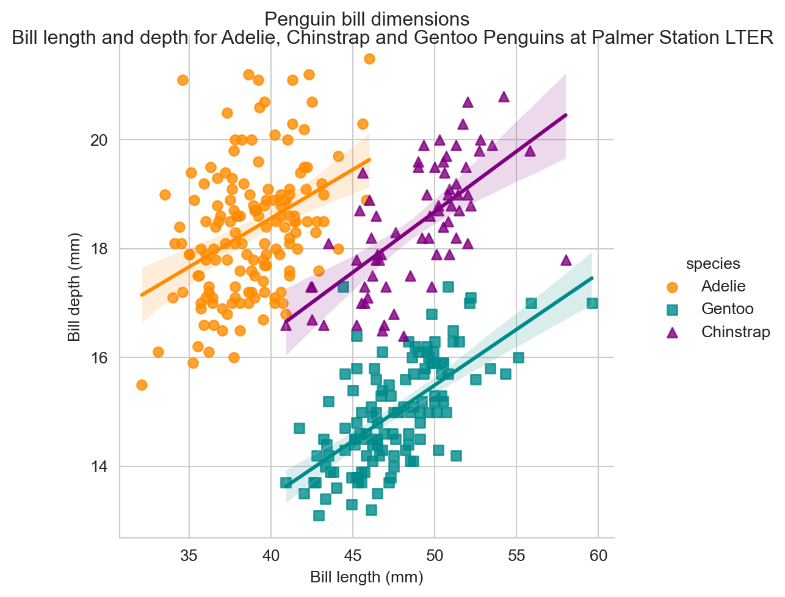
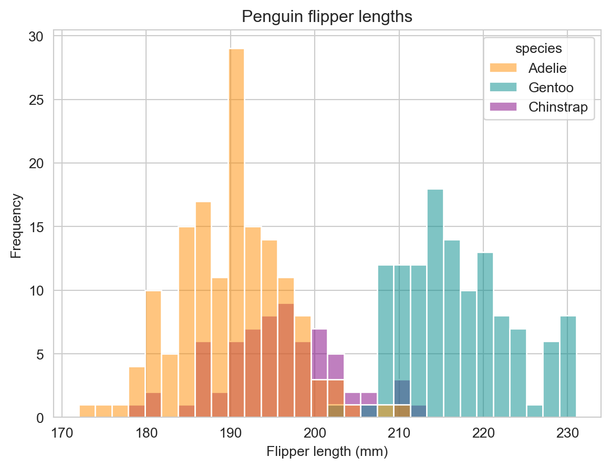
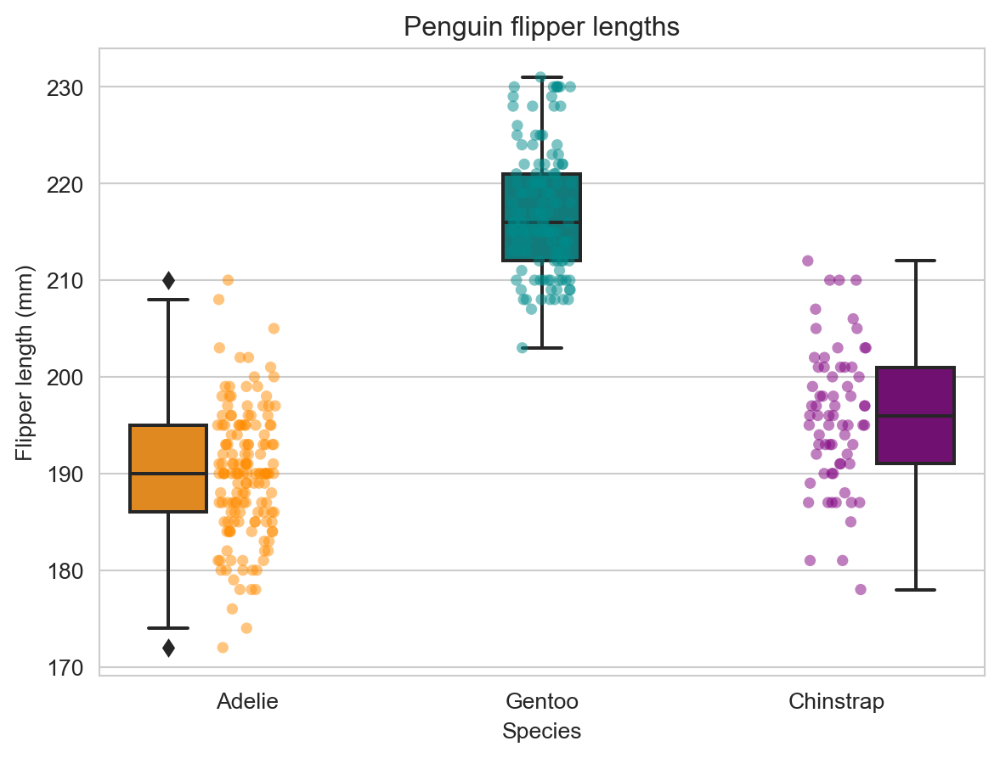
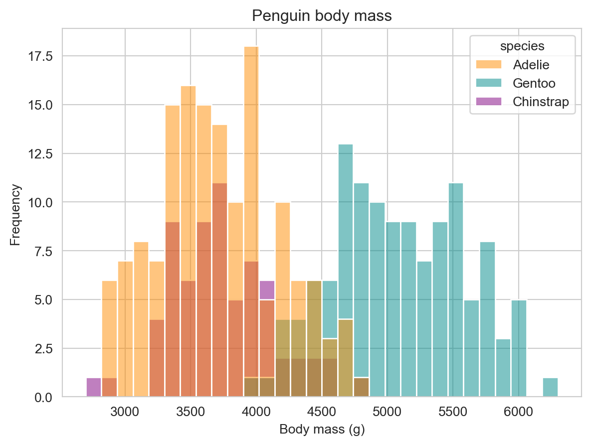
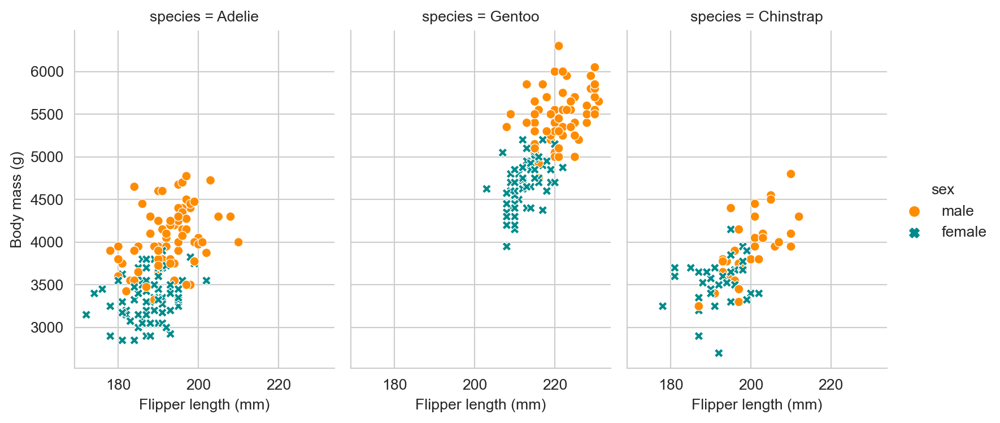

![]()
Code
x = 5
y = 3
print(x + y)8Below is an example to illustrate how to include executable code.
Python Code:
x = 5
y = 3
print(x + y)8import pandas as pd
data = {
'calories': [420, 380, 390],
'duration': [50, 40, 45]
}
#load data into a DataFrame object:
df = pd.DataFrame(data)
print(df) calories duration
0 420 50
1 380 40
2 390 45Generate Example graphs using the penguins data from palmerpenguins using Python, Seaborn and Matplotlib
Data were collected and made available by Dr. Kristen Gorman and the Palmer Station, Antarctica LTER, a member of the Long Term Ecological Research Network.
The dataset contain data for 344 penguins. There are 3 different species of penguins in this dataset, collected from 3 islands in the Palmer Archipelago, Antarctica.
You are invited to use this accompanying artwork when you use or teach with palmerpenguins! Please cite with "Artwork by @allison_horst".

The culmen is the upper ridge of a bird’s bill. In the simplified penguins data, culmen length and depth are renamed as variables bill_length_mm and bill_depth_mm to be more intuitive.
For this penguin data, the culmen (bill) length and depth are measured as shown below (thanks Kristen Gorman for clarifying!):

You can install the released version of palmerpenguins from PyPi with:
pip install palmerpenguinsTo install the development version from GitHub use:
pip install git+https://github.com/mcnakhaee/palmerpenguins.git
# To install the released version from PyPi use:
# pip install pandas
# pip install seaborn
# pip install matplotlib
# pip install palmerpenguins
# pip install plotly
# To install the development version from GitHub use:
# pip install git+https://github.com/mcnakhaee/palmerpenguins.git
import pandas as pd
import numpy as np
from palmerpenguins import load_penguins
import seaborn as sns
import matplotlib.pyplot as plt
penguins = load_penguins()
sns.set_style('whitegrid')Penguins are fun to Summarize and Visualize!df = penguins.groupby(['species'])['island'].count()
df = pd.DataFrame(df)
df| island | |
|---|---|
| species | |
| Adelie | 152 |
| Chinstrap | 68 |
| Gentoo | 124 |
df = penguins.groupby('species').mean(numeric_only=True)
temp_df_left = df.loc[:, df.columns != 'year'].round(2)
temp_df_right = df['year'].round()
df = temp_df_left.merge(temp_df_right, left_on = 'species', right_on = 'species')
df| bill_length_mm | bill_depth_mm | flipper_length_mm | body_mass_g | year | |
|---|---|---|---|---|---|
| species | |||||
| Adelie | 38.79 | 18.35 | 189.95 | 3700.66 | 2008.0 |
| Chinstrap | 48.83 | 18.42 | 195.82 | 3733.09 | 2008.0 |
| Gentoo | 47.50 | 14.98 | 217.19 | 5076.02 | 2008.0 |
df = penguins
# Create an array with the colors you want to use
colors = ['#FF8C00', '#008b8b', '#800080']
marker_list = ['o' , 's', '^']
# Set your custom color palette
sns.set_palette(sns.color_palette(colors))
p = sns.scatterplot(data = df,
x = 'flipper_length_mm',
y = 'body_mass_g',
hue = 'species',
style = 'species',
markers = marker_list
)
# Customize the axes and title
p.set_title('Flipper length and body mass for Adelie, Chinstrap and Gentoo Penguins')
p.set_xlabel('Flipper length (mm)')
p.set_ylabel('Body mass (g)')
plt.suptitle('Penguin size, Palmer Station LTER')
plt.show()
df = penguins
# Create an array with the colors you want to use
colors = ['#FF8C00', '#008b8b', '#800080']
marker_list = ['o' , 's', '^']
# Set your custom color palette
sns.set_palette(sns.color_palette(colors))
p = sns.scatterplot(data = df,
x = 'flipper_length_mm',
y = 'bill_length_mm',
hue = 'species',
style = 'species',
markers = marker_list
)
# Customize the axes and title
p.set_title('Dimensions for Adelie, Chinstrap and Gentoo Penguins at Palmer Station LTER')
p.set_xlabel('Flipper length (mm)')
p.set_ylabel('Bill length (mm)')
plt.suptitle('Flipper and bill length')
plt.show()
df = penguins
# Create an array with the colors you want to use
colors = ['#FF8C00', '#008b8b', '#800080']
marker_list = ['o' , 's', '^']
# Set your custom color palette
sns.set_palette(sns.color_palette(colors))
p = sns.lmplot(data = df,
x = 'bill_length_mm',
y = 'bill_depth_mm',
hue = 'species',
markers = marker_list
)
# Customize the axes and title
plt.title('Penguin bill dimensions')
plt.xlabel('Bill length (mm)')
plt.ylabel('Bill depth (mm)')
plt.suptitle('Bill length and depth for Adelie, Chinstrap and Gentoo Penguins at Palmer Station LTER')
plt.show()
df = penguins
# Create an array with the colors you want to use
colors = ['#FF8C00', '#008b8b', '#800080']
# Set your custom color palette
sns.set_palette(sns.color_palette(colors))
sns.histplot(data = df,
x = 'flipper_length_mm',
hue = 'species',
bins = 30
)
plt.title('Penguin flipper lengths')
plt.xlabel('Flipper length (mm)')
plt.ylabel('Frequency')
plt.show()
df = penguins
# Create an array with the colors you want to use
colors = ['#FF8C00', '#008b8b', '#800080']
# Set your custom color palette
sns.set_palette(sns.color_palette(colors))
# Usual boxplot
p = sns.boxplot(data = df,
x = 'species',
y = 'flipper_length_mm',
hue = 'species'
)
p.legend_.remove()
# Add jitter with the swarmplot function
p = sns.stripplot(data = df,
x = 'species',
y = 'flipper_length_mm',
hue = 'species',
marker = 'o',
alpha = 0.5
)
p.legend_.remove()
plt.title('Penguin flipper lengths')
plt.xlabel('Species')
plt.ylabel('Flipper length (mm)')
plt.show()
df = penguins
# Create an array with the colors you want to use
colors = ['#FF8C00', '#008b8b', '#800080']
# Set your custom color palette
sns.set_palette(sns.color_palette(colors))
sns.histplot(data = df,
x = 'body_mass_g',
hue = 'species',
bins = 30
)
plt.title('Penguin body mass')
plt.xlabel('Body mass (g)')
plt.ylabel('Frequency')
plt.show()
df = penguins
# Create an array with the colors you want to use
colors = ['#FF8C00', '#008b8b', '#800080']
marker_list = ['o' , 's', '^']
# Set your custom color palette
sns.set_palette(sns.color_palette(colors))
p = sns.relplot(data = df,
x = 'flipper_length_mm',
y = 'body_mass_g',
col = "species",
hue = 'sex',
style = 'sex',
height = 4,
aspect = 0.7,
kind="scatter"
)
# Customize the axes and title
p.set_axis_labels('Flipper length (mm)', 'Body mass (g)')
plt.show()
import plotly.express as px
df = penguins
fig = px.scatter(df,
x="flipper_length_mm",
y="body_mass_g",
color = "sex",
facet_col="species")
fig.show()To cite palmerpenguins in publications use:
Horst AM, Hill AP, Gorman KB (2020). palmerpenguins: Palmer Archipelago (Antarctica) penguin data. R package version 0.1.0. https://allisonhorst.github.io/palmerpenguins/. doi: 10.5281/zenodo.3960218.
A BibTeX entry for LaTeX users is
@Manual{,
title = {palmerpenguins: Palmer Archipelago (Antarctica) penguin data}, author = {Allison Marie Horst and Alison Presmanes Hill and Kristen B Gorman}, year = {2020}, note = {R package version 0.1.0}, doi = {10.5281/zenodo.3960218}, url = {https://allisonhorst.github.io/palmerpenguins/}, }
@online{shrestha,
author = {Shrestha, Mohit},
title = {Example of {Python} Codes},
url = {https://mohitshrestha.github.io/posts/example_python_codes},
langid = {en}
}